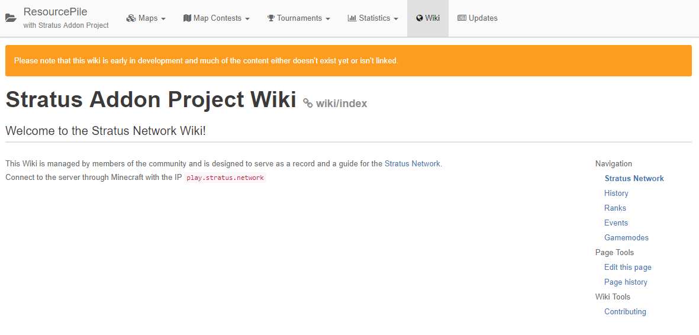
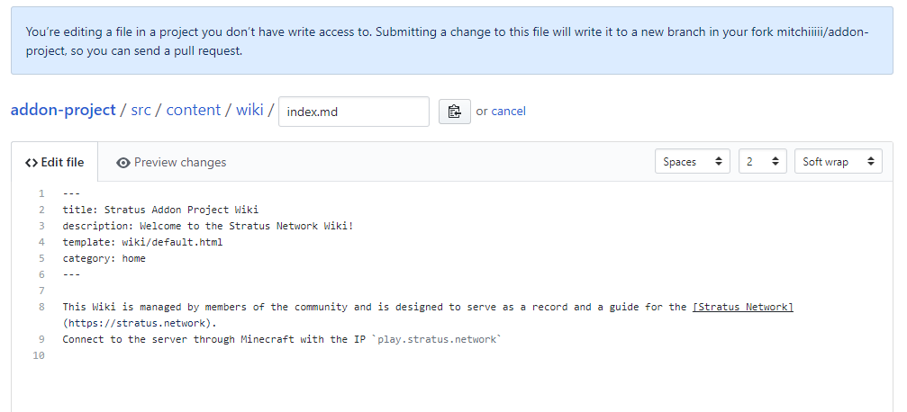
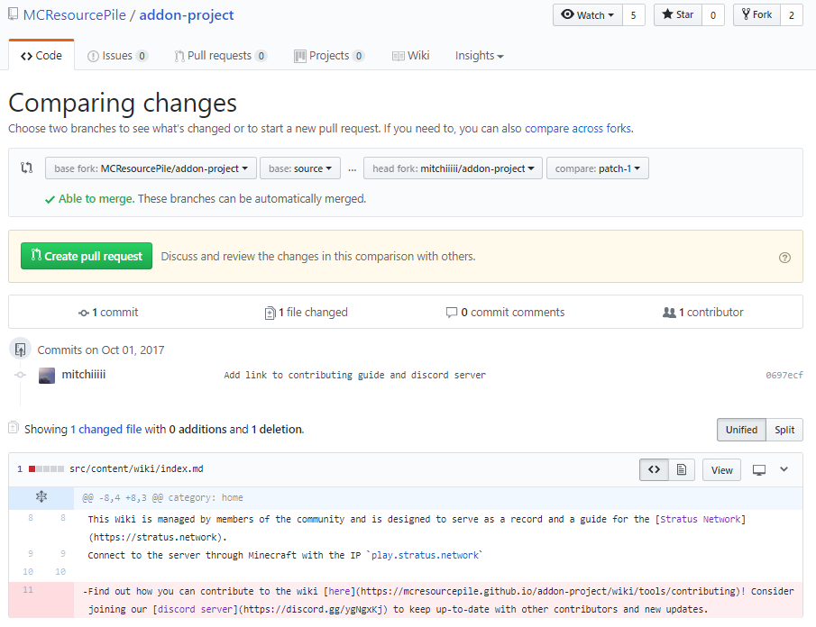

Contributing to the Stratus Addon Project is easy, and anyone can do it as long as they have a registered GitHub account! Follow the steps below and you'll be on your way making changes to the project.
Editing an existing page
Step 1
Go to the page you wish to make changes to and locate the Edit this page link towards the bottom of the wiki navigation. This will redirect you to the GitHub hosted markdown file which is where you can make any modifications. You must have a GitHub account and be signed in to make any changes.

Step 2
This is where you'll be making modifications to the addon project pages. Pages are written in markdown, however you can also use HTML if you absolutely need to. Try to do as much as you can in markdown. Each page includes in 'details' section at the top of the file, which will include the page's title, description, category, and template. This shouldn't be changed, unless it is incorrect, of course. All templates can be found here, and each are designed for a specific purpose. The types of accepted categories include:
historyrankseventsgamestools
Pages can have one category and will be displayed underneath that tab in the side navigation.

Step 3
Once you have made your changes, click Preview Changes to ensure that it all looks correct and that you haven't make any mistakes in the information. If everything is okay, commit your changes with a message such as Add x, Fix y, or Change z. Please do not use past tense in commit messages. After that, click Propose File Change.

Step 4
Here you can make one final check over the changes you have made. Click Create pull request to submit your changes for review to be added to the addon project site.

Step 5
Once your pull request has been accepted and merged your changed will be built into the site and deployed to the live version.

Last modification: unknown